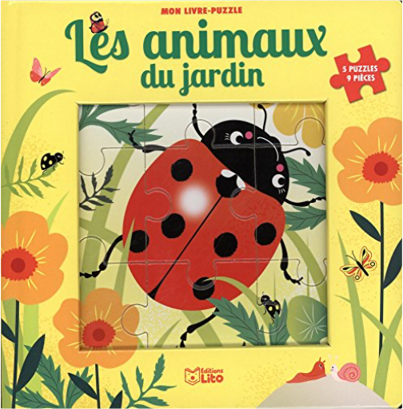
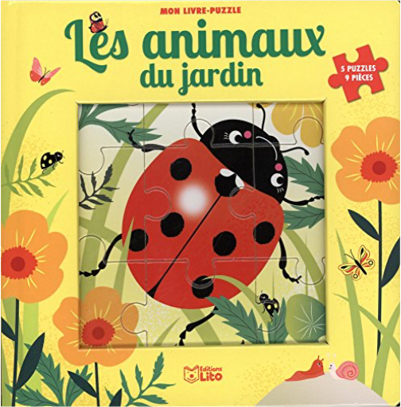

les animaux du jardinmon livre puzzle  Découvre les animaux du jardin tout en t'amusant avec ces 5 puzzles de 9 pièces chacun. |


 Made with Delicious Library
Made with Delicious LibraryNancy, State zipflap congrotus delicious library Thomas, Julien
les animaux du jardinmon livre puzzle Découvre les animaux du jardin tout en t'amusant avec ces 5 puzzles de 9 pièces chacun. |
Made with Delicious LibraryNancy, State zipflap congrotus delicious library Thomas, Julien